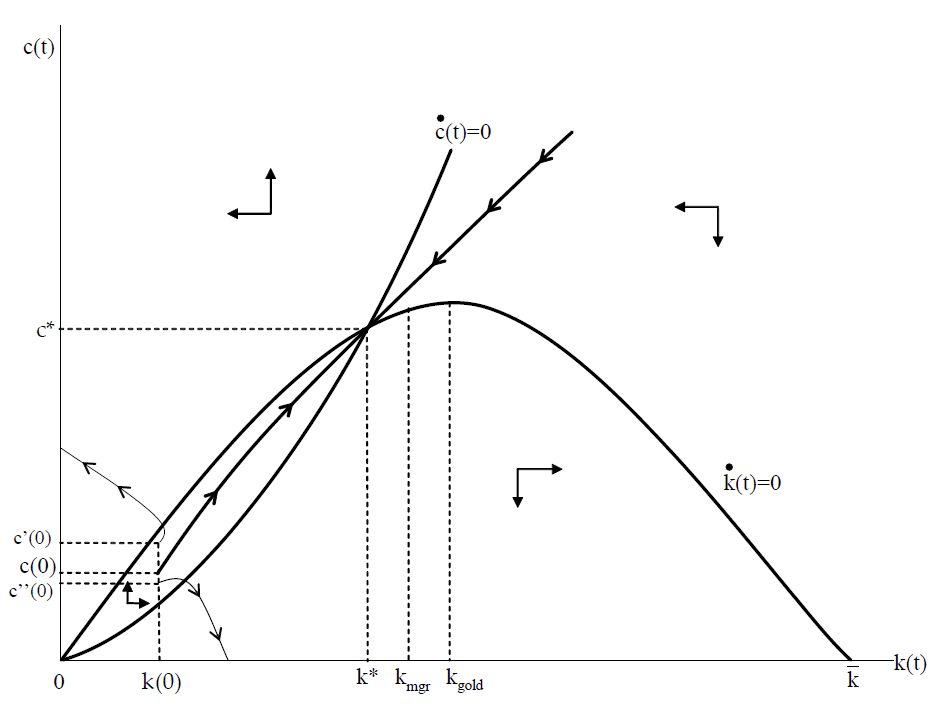

<!doctype html>
<html lang="en">

	<head>
		<meta charset="utf-8">

		<title>reveal.js - Class 6</title>

		<link rel="stylesheet" href="plugin/reveal.css">
		<link rel="stylesheet" href="plugin/black2.css" id="theme">
        <link rel="stylesheet" href="plugin/monokai.css">
        <link rel="stylesheet" href="plugin/title-footer.css">
       
	</head>

	<body>

		<div class="reveal">

			<div class="slides">


                <!-- Slides are separated by three dashes (quick 'n dirty regular expression) -->
                <section data-markdown data-separator="\n---\n" data-separator-vertical="^\n--\n">
                    <script type="text/template">
                        <!-- .slide: style="text-align: left;" -->
                        ## Macroeconomic Theory
                        ### Francesco Franco - Nova SBE
                        #### T3 2023 

                        ---

                        <!-- .slide: style="text-align: left;" -->
                        ## Perpetual Youth in continuous time 

                        An analytically tractable version of the perpetual youth model is the Blanchard-Yaari model of perpetual youth.

                        The key analytical trick:

                        -   all stochastic events are i.i.d.

                        -   in continuous time: they are drawn from a Poisson process

                        ---

                        <!-- .slide: style="text-align: left;" -->

                        ### Poisson process {#poisson-process .unnumbered}

                        The Poisson process [wikipedia](https://en.wikipedia.org/wiki/Poisson_point_process). The intuition on the real line is

                        -   events randomly distributed

                        -   on average, there are $\nu$ points per unit length

                        -   as time passes, move along the line and count the points

                        So if the $N(t)$ is the (random) number of events that occur during an interval of length $t$ the $$E\left[N(t)\right]=\nu t$$ For a short interval $t$, the probability of one event: $vt$.

                        ---

                        <!-- .slide: style="text-align: left;" -->
                        
                        ### Poisson process

                        The Poisson PDF: $$Pr\left(N(t)=n\right)=\frac{\left(\nu t\right)^{n}}{n!}e^{-\nu t}$$

                        so the probability of no event is $$e^{-\nu t}$$ which is the continuous time analogue of $(1-p)^{t}$ we had in the previous version of the model.

                        
                        ---

                        <!-- .slide: style="text-align: left;" -->
                        
                        ### Demography

                        -   Individuals die with constant probability $v$.

                        -   New individuals enter the economy at rate $n$ $$\dot{L}(t)=\left(n-\nu\right)L_{t}$$

                        -   At each $t$, persons from all birth cohorts $\tau\ge0$ are alive and the probability of being alive at time $t$ for a person born at $\tau$ is $$e^{-\nu\left(t-\tau\right)}$$ so that $$L\left(t,\tau\right)=e^{-\nu\left(t-\tau\right)}ne^{\left(n-\nu\right)\tau}L(0)$$

                        ---

                        <!-- .slide: style="text-align: left;" -->
                        
                        ### Individual problem 

                        Now the expected utility of a an individual born at $\tau$ $$E_{\tau}\int_{\tau}^{\infty}e^{-\rho(t-\tau)}u(t,\tau)dt$$ is $$\int_{\tau}^{\infty}e^{-\left(\rho+\nu\right)\left(t-\tau\right)}u(t,\tau)dt$$
                        
                        Newborn households do not own any assets and we assume annuity markets as before
                        
                        $$\pi\left(a\left(t,\tau\right)\right)=\nu a\left(t,\tau\right)-z\left(a\left(t,\tau\right)\right)$$

                        ---

                        <!-- .slide: style="text-align: left;" -->
                        
                        ### Individual problem 

                        the bc is $$\dot{a}\left(t,\tau\right)=\left(r(t)+\nu\right)a\left(t,\tau\right)-c\left(t,\tau\right)+w(t)$$ and the NPG $$lim_{z\rightarrow\infty}R\left(t,z\right)a\left(z,\tau\right)=0$$ with $R\left(t,z\right)=e^{-\int_{t}^{z}\left(r(s)+\nu\right)ds}$

                        The foc are assuming $u=ln(c)$ $$\frac{\dot{c}\left(t,\tau\right)}{c\left(t,\tau\right)}=r(t)-\rho$$ where the proba of death does not appear like it did in the discrete time version.


                        ---

                        <!-- .slide: style="text-align: left;" -->
                        
                        ### Individual problem 

                        Let us integrate the BC as before in the discrete time version $$\int_{t}^{\infty}c\left(z,\tau\right)R\left(t,z\right)dz=a\left(t,\tau\right)+\omega\left(t,\tau\right)$$

                        and intergate the foc $$\int_{\tau}^{t}c\left(z,\tau\right)e^{-\int_{z}^{t}\left(r(s)+\rho\right)ds}dz=0$$ that gives you $$c\left(t,\tau\right)=c\left(\tau,\tau\right)e^{\int_{\tau}^{t}\left(r(s)+\rho\right)ds}$$ plug it into th IBC $$c\left(t,\tau\right)=\left(r\left(t\right)+\nu\right)a\left(t,\tau\right)+\omega\left(t,\tau\right)$$
                        ---

                        <!-- .slide: style="text-align: left;" -->
                        
                        ### Aggregation

                        Aggretaion is much simpler relative to the discrete time model $$\frac{\int_{-\infty}^{t}c\left(t,\tau\right)L\left(t,\tau\right)d\tau}{\int_{-\infty}^{t}L\left(t,\tau\right)d\tau}=c(t)=\left(\rho+\nu\right)a\left(t\right)+\omega\left(t\right)$$

                        This is a strong form of aggregation: aggregate consumption behaves like individual consumption as if a single individual made the choice.

                        ---

                        <!-- .slide: style="text-align: left;" -->
                        
                        ### Dynamic System

                        The equations that describe the system are therefore $$c(t)=\left(\rho+\nu\right)a\left(t\right)+\omega\left(t\right)$$ $$\dot{a}\left(t\right)=\left(r(t)+\nu-n\right)a\left(t\right)-c\left(t\right)+w(t)$$ $$\omega(t)=\int_{t}^{\infty}w(z)R\left(t,\tau\right)dz$$ where this last term is annoying.

                        
                        ---

                        <!-- .slide: style="text-align: left;" -->
                        ## Dynamic System

                        Differentiate the consumption and $\omega$ function wrt to time $$\dot{c}(t)=\left(\rho+\nu\right)\left(\dot{a}\left(t\right)+\dot{\omega}\left(t\right)\right)$$ and $$\dot{\omega}\left(t\right)=\left(r(t)+\nu\right)\omega(t)+w(t)$$

                        
                        ---

                        <!-- .slide: style="text-align: left;" -->
                        
                        ### Dynamic System 

                        combine

                        $$\dot{c}(t)=\left(\rho+\nu\right)\left(+\left(r(t)+\nu\right)\omega(t)+w(t)\right)$$ $$\dot{c}(t)=\left(\rho+\nu\right)\left(\left(r(t)+\nu-n\right)a\left(t\right)-c\left(t\right)+w(t)+\left(r(t)+\nu\right)\omega(t)+w(t)\right)$$ $$\dot{c}(t)=\left(\rho+\nu\right)\left(\left(r(t)+\nu\right)\left(a\left(t\right)+\omega(t)\right)-c\left(t\right)-na\left(t\right)\right)$$ $$\dot{c}(t)=\left(\rho+\nu\right)\left(\frac{\left(r(t)+\nu\right)}{\left(\rho+\nu\right)}c(t)-c\left(t\right)-na\left(t\right)\right)$$ $$\frac{\dot{c}(t)}{c(t)}=\left(r(t)-\rho-\left(\rho+\nu\right)n\frac{a\left(t\right)}{c(t)}\right)$$

                        ---

                        <!-- .slide: style="text-align: left;" -->
                        
                        ### Aggregate Dynamic System

                        using foc firms and markets clearing $$\frac{\dot{c}(t)}{c(t)}=\left(f'(k_{t})-\rho-\left(\rho+\nu\right)n\frac{k\left(t\right)}{c(t)}\right)$$ $$\dot{k}\left(t\right)=f(k_{t})-\left(n-\nu\right)k\left(t\right)-c\left(t\right)$$ with $k_{0}$ and TVC\...

                        
                        ---

                        <!-- .slide: style="text-align: left;" -->
                        
                        ### Steady State

                        $$c=\frac{\left(\rho+\nu\right)n}{f'(k_{t})-\rho}k$$ and $$c=f(k)-\left(n-\nu\right)k$$ combining $$f(k)-\left(n-\nu\right)k=\frac{\left(\rho+\nu\right)n}{f'(k_{t})-\rho}k$$

                        You can show there is a unique $k$ in steady state and a unique level of consumption. Notice also that $f'(k)>\rho$ which always gives you under accumulation relative to the MGR.

                        ---

                        <!-- .slide: style="text-align: left;" -->
                        
                        ### Dynamics

                        Phase diagram

                        <center></center>

                        ---

                        <!-- .slide: style="text-align: left;" -->

                        ### Life cycle 

                        Add declining income through the life of individuals $$e^{-\zeta\left(t-\tau\right)}w\left(t\right)$$ now $\omega\left(t,\tau\right)$ depends on the age. You can derive the new equation that descibes aggregate consumption dynamics $$\frac{\dot{c}(t)}{c(t)}=\left(f'(k_{t})-\rho+\zeta-\left(\rho+\nu\right)\left(\zeta+n\right)\frac{k\left(t\right)}{c(t)}\right)$$ and with $n>0$ and $\zeta>0$ you can have overaccumulation. You can also have a negative real interest rate in the steady state equilibrium.

                        ---

                        <!-- .slide: style="text-align: left;" -->
                        
                        ### Fiscal Policy

                        The government can issue debt at the interest rate $r(t)$ and not $r(t)+\nu$. Consider the case where the interest rate is positive (the other is interesting but makes the IBC of the government irrelevant).

                        Consider a reallacoation of taxes with a deacrese in $t$ associated with an increase in $t+s$ keeping constant $G.$ The different interest rates at which government and individuals discount the future taxes implies a change in the allocations of consumption: taxs are partly shifted to future generations.


                
                        
                    </script>
                </section>

            </div>
		</div>

		<script src="plugin/reveal.js"></script>
        <script src="plugin/markdown.js"></script>
        <script src="plugin/highlight.js"></script>
        <script src="plugin/notes.js"></script>
        <script src="plugin/plugin.js"></script>
        <script src="plugin/math.js"></script>
        <script src="plugin/plugin.js"></script>
        <script src="plugin/menu.js"></script>
        <script src="plugin/pdfexport.js"></script>

		<script>

			Reveal.initialize({
				controls: true,
				progress: true,
				history: true,
                center: true,
                touch: true,
                dependencies:
                [
                    { src: 'plugin/title-footer.js', async: true, callback: function() { title_footer.initialize(); } }
                ],
                math: {
                    mathjax: 'https://cdn.jsdelivr.net/gh/mathjax/mathjax@2.7.8/MathJax.js',
                    config: 'TeX-AMS_HTML-full',
                    // pass other options into `MathJax.Hub.Config()`
                    TeX: { Macros: { RR: "{\\bf R}" } }
                    },
        
                chalkboard: {
                    boardmarkerWidth: 3,
                    chalkWidth: 3,
                    chalkEffect: 0.0,
                    src: null,
                    readOnly: false,
                    toggleChalkboardButton: { left: "90px", bottom: "30px", top: "auto", right: "auto" },
                    toggleNotesButton: { left: "60px", bottom: "30px", top: "auto", right: "auto" },
                    transition: 800,
                    theme: "whiteboard",
                    background: [ 'rgba(127,127,127,.1)' , path + 'img/blackboard.png' ],
                    //grid: { color: 'rgb(50,50,10,0.5)', distance: 80, width: 0.5},
                    eraser: { src: path + 'img/sponge.png', radius: 20},
                    boardmarkers : [
                            { color: 'rgba(255,255,255,0.5)', cursor: 'url(' + path + 'img/chalk-white.png), auto'},
                            { color: 'rgba(30,144,255, 1)', cursor: 'url(' + path + 'img/boardmarker-blue.png), auto'},
                            { color: 'rgba(220,20,60,1)', cursor: 'url(' + path + 'img/boardmarker-red.png), auto'},
                            { color: 'rgba(50,205,50,1)', cursor: 'url(' + path + 'img/boardmarker-green.png), auto'},
                            { color: 'rgba(255,140,0,1)', cursor: 'url(' + path + 'img/boardmarker-orange.png), auto'},
                            { color: 'rgba(150,0,20150,1)', cursor: 'url(' + path + 'img/boardmarker-purple.png), auto'},
                            { color: 'rgba(255,220,0,1)', cursor: 'url(' + path + 'img/boardmarker-yellow.png), auto'}
                    ],
                    chalks: [
                            { color: 'rgba(255,255,255,0.5)', cursor: 'url(' + path + 'img/chalk-white.png), auto'},
                            { color: 'rgba(96, 154, 244, 0.5)', cursor: 'url(' + path + 'img/chalk-blue.png), auto'},
                            { color: 'rgba(237, 20, 28, 0.5)', cursor: 'url(' + path + 'img/chalk-red.png), auto'},
                            { color: 'rgba(20, 237, 28, 0.5)', cursor: 'url(' + path + 'img/chalk-green.png), auto'},
                            { color: 'rgba(220, 133, 41, 0.5)', cursor: 'url(' + path + 'img/chalk-orange.png), auto'},
                            { color: 'rgba(220,0,220,0.5)', cursor: 'url(' + path + 'img/chalk-purple.png), auto'},
                            { color: 'rgba(255,220,0,0.5)', cursor: 'url(' + path + 'img/chalk-yellow.png), auto'}
                    ]
                },
                

				plugins: [ RevealMarkdown, RevealHighlight, RevealNotes,RevealMath, RevealMenu, RevealChalkboard, PdfExport]
			});

		</script>

	</body>
</html>
